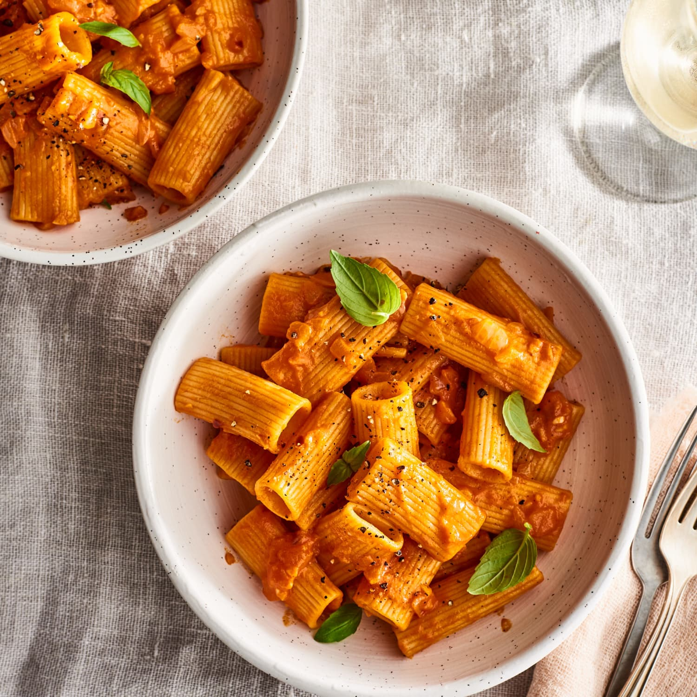
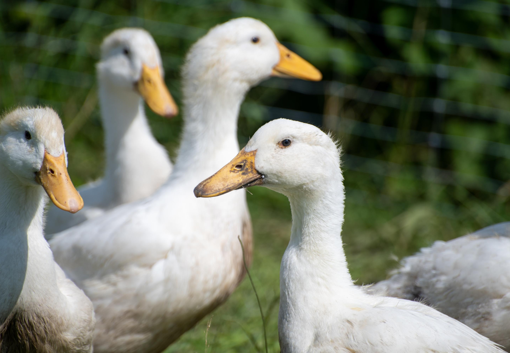

Melody Zong
All About Me
My Favorite Food
There are millions, if not billions, of food dishes on Earth. Humans try many of these foods throughout their lifespan, often choosing a singular option as their favorite. Personally, my favorite food is pasta: a dish from Italy made from wheat dough that is coated with a sauce. I especially enjoy eating rigatoni pasta, which is tube-shaped and provides a satisfying, chewy texture. Its ribbed structure allows for excellent sauce adhesion and is ideal for thick or chunky sauces. If you ever find yourself traveling to Italy, I strongly advise you to try some authentic rigatoni pasta with vodka sauce.
I Like Stabbing my Friends
 I am sure you’ve heard of the activity of fencing before – a combat sport where two people score points by hitting each other with blunted swords. In the historical context, fencing was used to settle disputes, with the main purpose being to violently kill one’s opponent. Luckily, I can engage in this sport today with little to no peril, as killing others for leisure is no longer legal. Fencing holds a special place in my heart; it has taught me sportsmanship, concentration, and discipline. I encourage you to visit your nearest fencing center and give it a try, since it truly is an entertaining hobby. Safe to say, I like stabbing my friends.
I am sure you’ve heard of the activity of fencing before – a combat sport where two people score points by hitting each other with blunted swords. In the historical context, fencing was used to settle disputes, with the main purpose being to violently kill one’s opponent. Luckily, I can engage in this sport today with little to no peril, as killing others for leisure is no longer legal. Fencing holds a special place in my heart; it has taught me sportsmanship, concentration, and discipline. I encourage you to visit your nearest fencing center and give it a try, since it truly is an entertaining hobby. Safe to say, I like stabbing my friends.
My #1 Animal
 The seemingly insignificant duck is my favorite animal. Many use them for meat, eggs, or pest control, but I appreciate them for the sense of calm they bring wherever they go. I love sitting by a vast lake and watching them effortlessly glide across the water, leaving a swirling ripple pattern behind them. I admire how they resiliently dive for fish, not giving up until they ensure the entire duck family is full. They are arguably one of the most loyal species, since they are willing to migrate thousands of miles with their flock. I aspire to be like a duck: serene, determined, and dedicated.